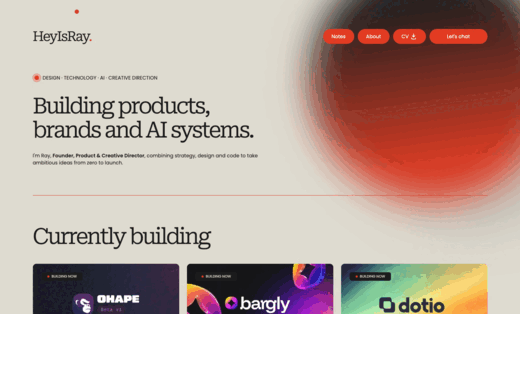
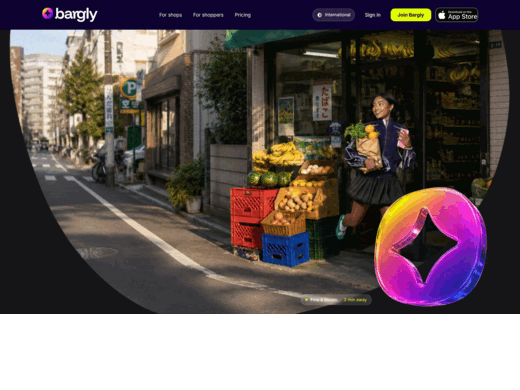
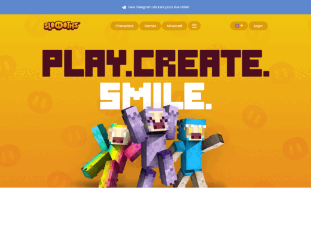
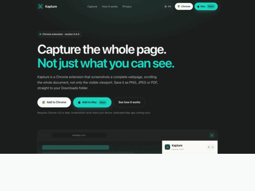
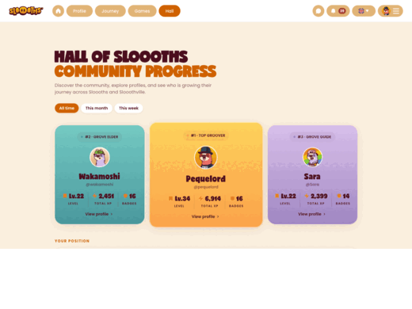

PNG、JPEG 或 PDF
截图前先选好格式。PDF 会生成一个本地的多页文件。
Chrome 扩展程序 0.4.7 · Mac 版 Kapture Pro
Kapture 直接在 Chrome 里保存整张网页或你框选的区域。 Kapture Pro 把它们变成 Mac 上一个井井有条、可搜索的可视化图库。
需要 Chrome 120 或更高版本。Chrome 版 Kapture 免费，Mac 版 Kapture Pro 即将推出。
Kapture Pro Mac 版

Kapture Chrome 版

使用方法
找到你想保存的内容。
侧边栏会在页面旁边打开。
选整页或某个区域，然后保存。
Chrome 版 Kapture · 0.4.7
截取整张网页，或只框选你需要的那块区域。以 PNG、JPEG 或 PDF 保存在本地。

Kapture 从上到下滚动页面，保存完整的网页。
在你真正需要的地方拖出选框，只保存那一部分。
扩展程序里有什么
截图前先选好格式。PDF 会生成一个本地的多页文件。
按当前窗口截图，也可以先用手机 390、平板 820、桌面 1440 或桌面 1920 的宽度重新渲染页面。
按页面或项目给文件夹命名。截图会按顺序存进去，Kapture Pro 随时可以接手。
最新的排在最前，带预览、网站和时间。可以直接打开某张截图，也可以勾选多张彻底删除。
侧边栏两种主题都有，并会记住你的选择。
没有账号，没有广告，没有数据统计。截图在你的电脑上生成，也留在那里。
Mac 版 Kapture Pro
Kapture Pro 会索引你 Mac 上已有的截图，把它们变成一个可搜索的可视化图库。 文件不会被移动，不会被上传，也不会离开硬盘。
Every screenshot and PDF in your Kapture folder.
getdotio_001.png
2 hours ago☆ ⋯

PNGohmywork_001.png
4 hours ago☆ ⋯

JPGbargly_001.png
Yesterday☆ ⋯

PNGsloooths_001.png
Yesterday☆ ⋯

PNGkaptapp_001.png
2 days ago☆ ⋯
getdotio_002.png
3 days ago☆ ⋯

PNGsloooths_002.png
3 days ago☆ ⋯
Creates a folder inside your Kapture folder. Screenshots saved there appear in this project.
Icon
Color
Kapture 工作流
Kapture 负责在 Chrome 里截图，Kapture Pro 负责在 Mac 上整理。看看每个产品单独能做什么，以及两个一起用能带来什么。
| 功能 | Chrome 版 Kapture | Mac 版 Kapture Pro | 一起用 |
|---|---|---|---|
| 整页截图 | |||
| 框选区域截图 | |||
| PNG、JPEG 或 PDF | |||
| 保存到本地 | |||
| 可视化截图图库 | |||
| 项目与合集管理 | |||
| 搜索与筛选 | |||
| 标签与备注 | |||
| 文件信息面板 | |||
| 从截图到整理的完整流程 |
隐私
Kapture 在你的电脑上生成截图，并通过 Chrome 自带的下载功能保存。Kapture Pro 读取的是 Mac 上已有的文件。没有任何东西被上传，两款产品都不需要账号，也都不含 分析、广告或追踪。
免费
整页和区域截图，直接存进你选好的项目文件夹。
添加到 Chrome一次性买断
搜索、整理并对比你已经截下的所有内容。
Kapture Pro价格尚未最终确定。一次付费，无订阅。